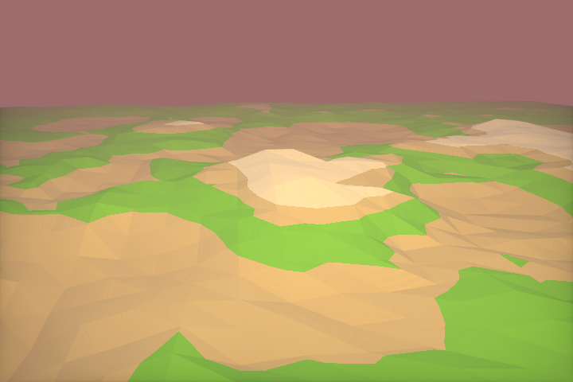

Creating worlds has always been a pasttime hobby of mine. The tools of my craft span from legos to computer code. In this project I attempt to create a dynamic planet generator, though I have not gotten off the ground just yet.
Content
- Introduction
- The raymarching algorithm
- Rendering techniques
- Iteration based coloring
- Bounding volume
- Fog
- Anti-aliasing
- Lighting
- Shadows
- Ambient occlusion
- Reflections
- Distortion and repetition
- Other
- Conclusion
- Code
- References
Introduction
Raymarching is a 3d-rendering technique, praised by programming-enthusiasts for both its simplicity and speed. It has been used extensively in the demoscene, producing low-size executables and amazing visuals. The most frontstanding figure behind its popularity, is Inigo Quilez, promoting it with his presentation at nvscene: Rendering Worlds With Two Triangles.
The idea is this: Say you have some surface in space. You don't have an explicit formula for it, nor a set of triangles describing it. But you can find out how far away it is, from any point. How would you render this surface?
First of all, we need to find out which points that lie on the surface, and what pixels they correspond to. To do this we use a technique known as ray-casting.
Imagine you and your monitor being placed in this virtual world. Your eye will be looking at a rectangle (your monitor), which we shall call the image plane. Ray-casting works by shooting rays from the eye through each pixel on the image plane, and finding the closest object blocking the path of the ray. Once we hit an object, we can compute the color and shading of the corresponding pixel. If the ray does not hit anything, the pixel is colored with some sky color.
There are several ways in which we can calculate the intersection, for example we analytically solve for it. A raymarcher, however, looks for an approximate solution, by marching along the ray in steps until it finds an intersection. By controlling the step size using a distance field, we can reach blazing speeds, even on a regular laptop GPU.
The raymarching algorithm
In traditional raytracing, a scene is often described by a set of triangles or spheres, making up a mesh. Using some spatial acceleration structure, we can quickly solve for the exact intersections between the rays and the objects.
With raymarching however, we allow for some leeway in the intersection, and accept it when a ray is close enough to a surface. This is done by marching along the ray at step sizes, and checking whether or not the surface is within a given threshold. We can set a limit on the number of steps to prevent marching into oblivion. In code the algorithm looks like this:
bool raymarch(vec3 rayOrigin, vec3 rayDirection) {
float t = 0.0f;
for(int i = 0; i < maxSteps; ++i) {
float d = sceneDistance(rayOrigin + rayDirection * t);
if(d < epsilon) {
// Do something with p
return true;
}
t += d;
}
return false;
}
But this can be slow if the step size is small, and inaccurate if the step size is large. So we speed things up by implementing a variable step size, and that is where distance fields comes in.